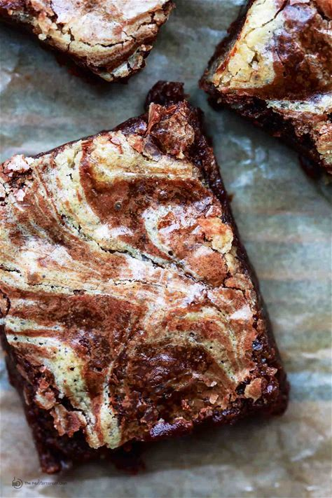

Brownies

Description
Tahini brownies that are anything but your average one-note chocolate brownies. Moist chocolate brownies with a
generous swil of tahini.
Ingredients
- 4 tbsp salted butter
- 4 oz bittersweet dark chocolate chips
- 3 tbsp cocoa powder
- 2 large eggs
- 1 cup white sugar
- 1 tbsp vanilla extract
- 1 tbsp salt
- 3/4 cup tahini
- 1/3 cup all-purpose flour
Steps
- Heat the oven to 350 degrees F. Line an 8-inch square pan with 2 pieces of foil (crossed, and with excess
hanging over on all sides of the pan). Lightly brush the foil with butter.
- Melt the butter in a medium saucepan over medium heat. Remove from heat and immediately add the chocolate
chips and cocoa. Whisk until smooth.
- In a large mixing bowl, whisk the eggs, sugar, vanilla and salt to form a slightly thick mixture. Add the
tahini and whisk to combine. Now fold in the flour, stir until just incorporated (do not over-stir). Reserve
half of the tahini mixture in a separate bowl for later. Add the melted chocolate mixture to the remaining
tahini mixture, stir until batter is well combined.
- Pour the batter into the pan you prepared. Spread evenly.
- With a spoon, dollop the reserved tahini mixture over the top (imagine a grid, and add one dollop of tahini
mixture to each square on that grid). With the tip of a butter or pairing knife, swril the tahini dollops
into the brownie batter.
- Place the pan on the middle rack of the 350 degrees F heated-oven. Bake for 28-30 minutes, until the edges
are set but the center remain moist. Remove from the oven. Cool in the pan for 30 minutes. Lift the foil
edges up carefully to transfer the brownies from the pan. Cool for another 30 minutes (do not remove from
the foil yet). Cut into 2-inch squares. Enjoy!